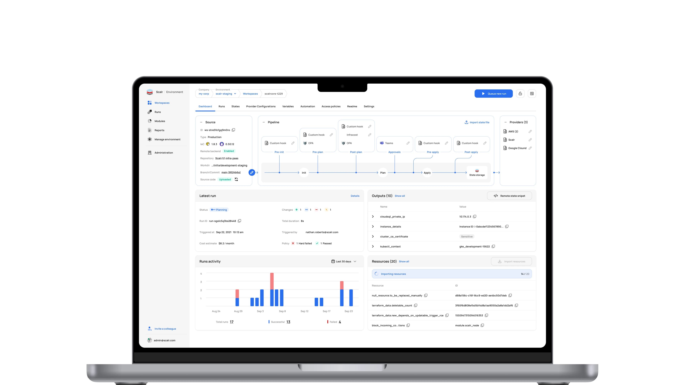
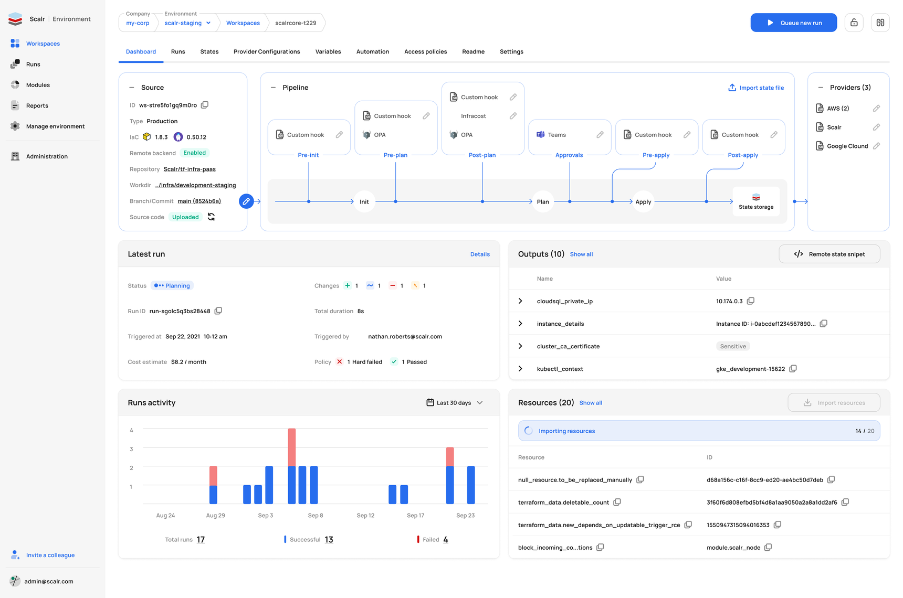
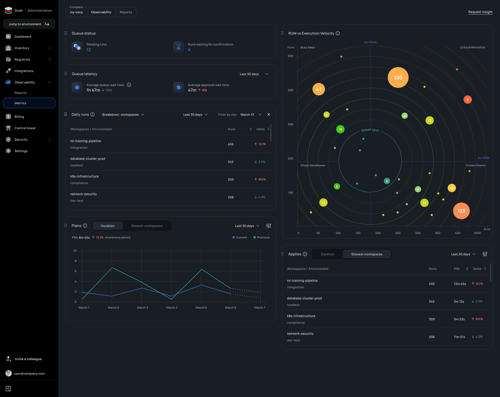
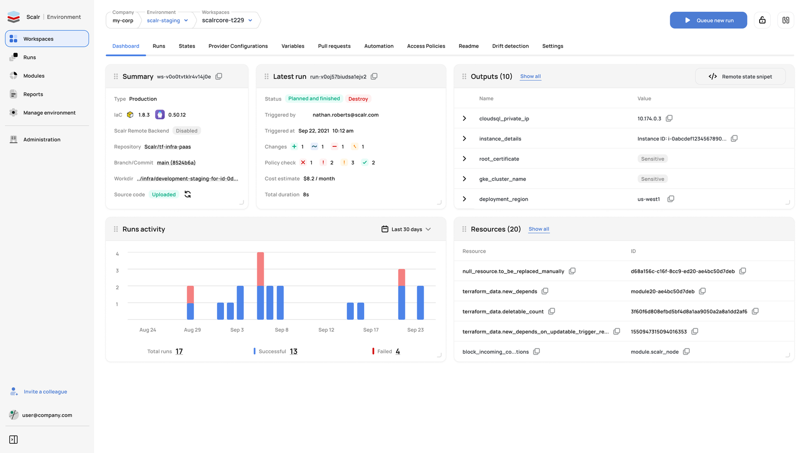
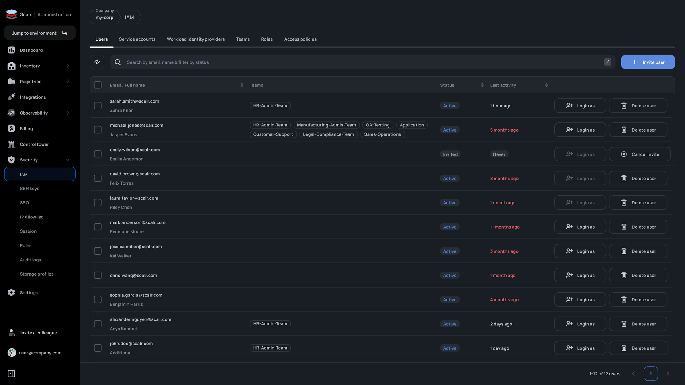
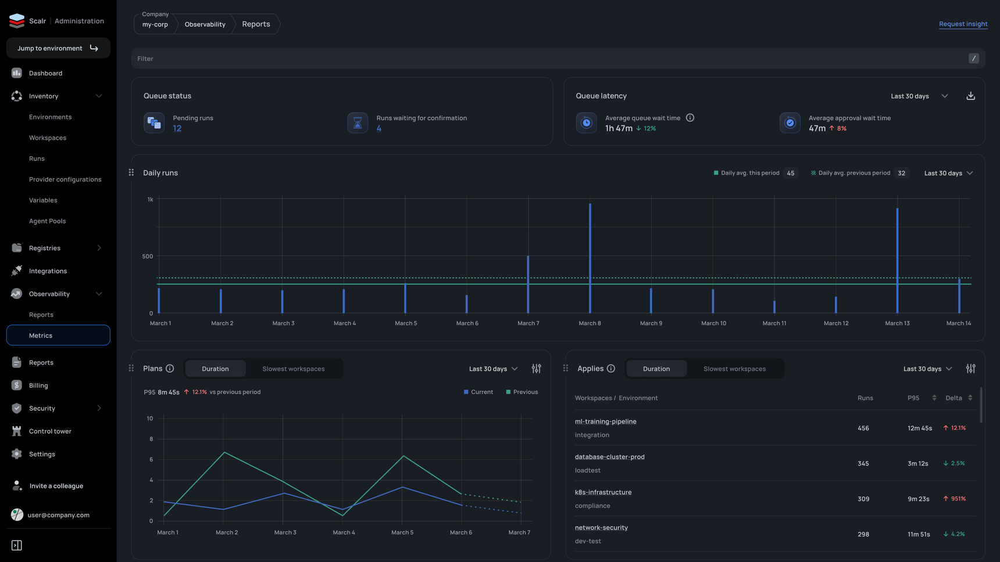
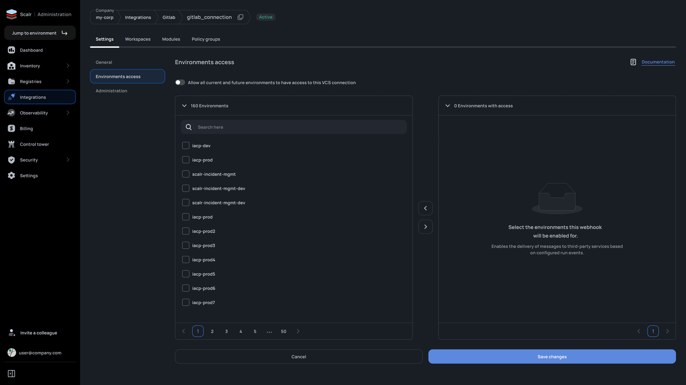
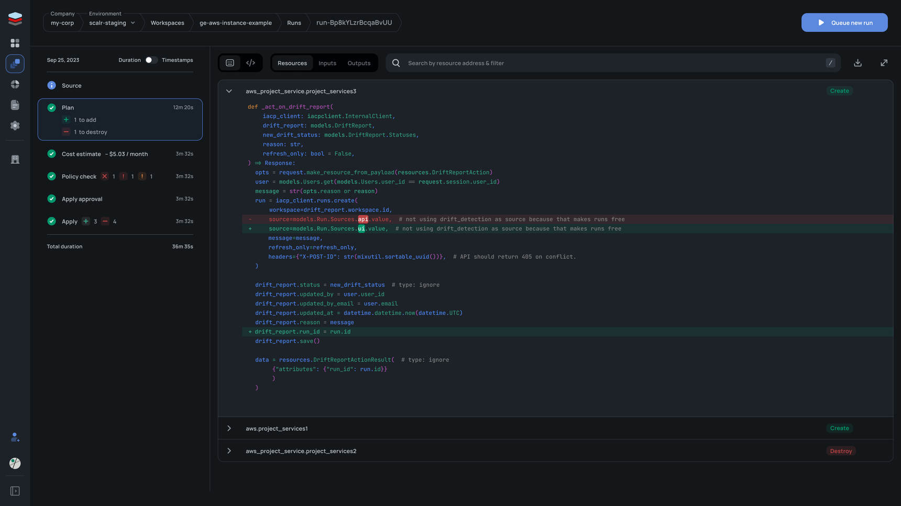
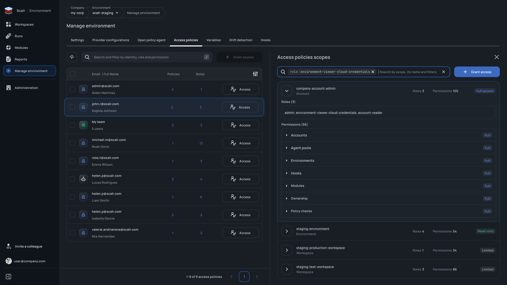

Scalr: design system, product work
I built and maintained the design system from scratch and ran product tasks for four years.
Scalr is an enterprise platform for Terraform and OpenTofu: DevOps teams use it to run infrastructure changes, check them against OPA policies, and see the cost before anything is applied.
I worked daily with engineers and PM. Below are eight product tasks, each from problem to solution: dashboards, observability, access and run detail.
Figma Ant Design Mixpanel
Compressed Ant Design tokens to 72 semantic ones. Light and dark themes grow from one base.
Designed the observability the product never had. Teams stopped firefighting blind.
Design system plus product design, in a team with engineers and PM.

Dashboard v2: pipeline at the center
Users went from reading docs to editing the run lifecycle right on the screen.
I reworked the top of the dashboard to expose the whole pipeline visually: Init, Plan, Apply and State Storage, each hook mapped to its stage.
The first iteration answered “what’s the state”, but the pipeline stayed a black box: you could not see which hooks fire at which stage or where to customize it. I made the diagram interactive: hooks on pre-init, pre-plan, post-plan, pre-apply and post-apply, approvals, OPA policies, Infracost cost estimation and notifications are added straight from it instead of through settings. The working parts of v1, meaning Latest run, Outputs, Runs activity and Resources, stayed in the lower half and work as before.

Metrics v2: RUM × velocity bubble chart
A spreadsheet-level analysis became a two-second visual scan.
I tied three dimensions into one bubble chart: run count, RUM (resources under management, how much infrastructure a workspace actually carries) and execution velocity, encoded as bubble color.
The first metrics showed trends and the slowest workspaces but could not answer which workspaces need attention and why: 500 runs at 2 minutes is fine, 500 at 10 minutes is a money pit. I split the chart into semantic zones: Busy Bees, Critical Monoliths, Frozen Giants and Ghost Sandboxes, with the Sweet Spot in the middle. Every bubble is numbered and clickable, so a platform lead points at a zone and names the three problem workspaces right away.

Workspace dashboard
The dashboard became a single-screen decision point: see the state, understand what happened, and act without leaving the page.
I surveyed power users on which data matters and when, then restructured the screen into contextual blocks that each answer one question.
The old dashboard was a flat list of data with no context, so understanding a workspace meant jumping between several tabs. The blocks are Summary, Latest run, Outputs, Runs activity and Resources. I added actions straight from the dashboard, meaning Queue new run and Show all, a runs-activity chart, and surfaced policy-check results and cost estimates that were previously buried two or three clicks deep.

IAM: access management
“Who has access and when did they last log in” dropped from ~15 minutes of clicking to a 5-second scan.
I split IAM into tabs and added a Last-activity column with color flags for accounts inactive 5+ months.
The old page was a plain list of names and emails, so an admin could not assess team structure or find inactive accounts without clicking into each user. The tabs are Users, Service accounts, Workload identity providers, Teams, Roles and Access policies: from real people to CI/CD accounts and keyless authentication. I added a Teams column in the list, a Login-as action for debugging permissions, and a search that combines email, name and status in one field.

Observability: metrics from zero
Platform teams got proactive monitoring where there was none at all.
I designed the metrics page from zero around two questions: “what’s happening now” and “what’s the trend”.
Scalr had no centralized performance monitoring: teams could not see queues, run durations or degrading workspaces, and found problems only after something broke. “Now” is queue status and latency, “trend” is Daily runs, Plans and Applies. I built comparison into every chart, current versus previous period with delta percentages, and a Slowest workspaces view ranked by P95, so a vague “things feel slow” becomes a concrete list of what to fix first.

VCS connection access: bulk assignment
What took minutes of repetitive clicking across 160+ environments now takes seconds.
I replaced the modals with a dual-pane picker: environments without access on the left, with access on the right, arrows between them.
A VCS connection (GitHub, GitLab) is the channel Scalr pulls Terraform code and webhooks through, and an admin decides which environments may use it. Granting access used to run through pop-ups and multi-step actions, and bulk assignment was near impossible without clicking each environment. The pattern is familiar from file managers. I added search and pagination for scale and an “Allow all current and future environments” toggle, meaning one click instead of a hundred and sixty.

Run detail: read it like a pull request
Engineers read a run the way they review a pull request: familiar pattern, nothing new to learn.
I collapsed the pipeline into a compact vertical timeline on the left and gave the right side to what matters: the code diff and resource changes.
The old run-detail page was bloated: pipeline stages, resources and code changes sat with no hierarchy, so understanding what changed meant scrolling and clicking. The timeline is Source, Plan, Cost estimate, Policy check, Apply approval and Apply. I built a GitHub-style diff viewer with red and green highlighting, a per-resource accordion, and search by resource address.

Access policies: making complexity readable
A ten-minute audit per user shrank to one click.
I built a split panel: the list on the left, the full access breakdown on the right, with an Account, Environment and Workspace hierarchy.
The policy system is complex by nature: users and teams have multiple scopes, each with its own roles, so “what exactly can this user do, and where” meant clicking through several screens and piecing it together. The hierarchical view shows the access level (Full access, Read-only, Limited) and permission count, permissions are expandable, role-based filtering in search answers the reverse question “who has this role”, and users and teams sit in one list with distinct icons.

What I took away
Terraform workflows can’t be designed from UX principles alone.
I read the docs, watched how engineers work, and asked questions at engineering standups.
You earn the trust of technical users with domain knowledge. Without it the design only looks good.